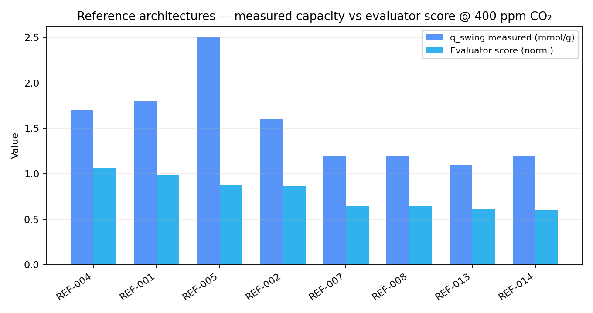
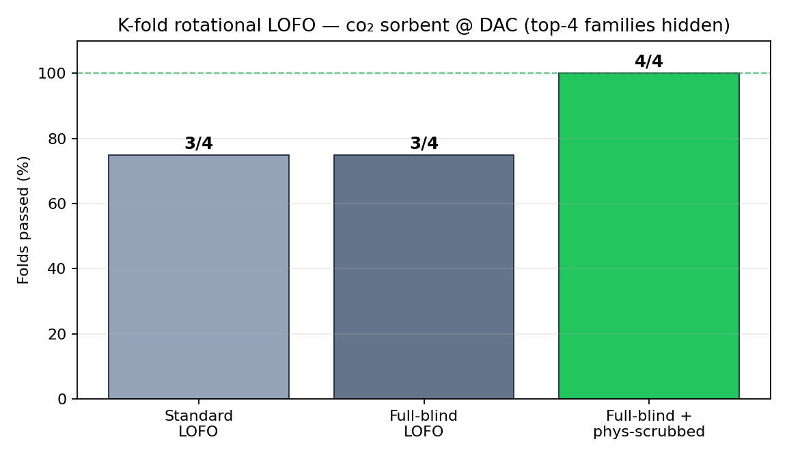
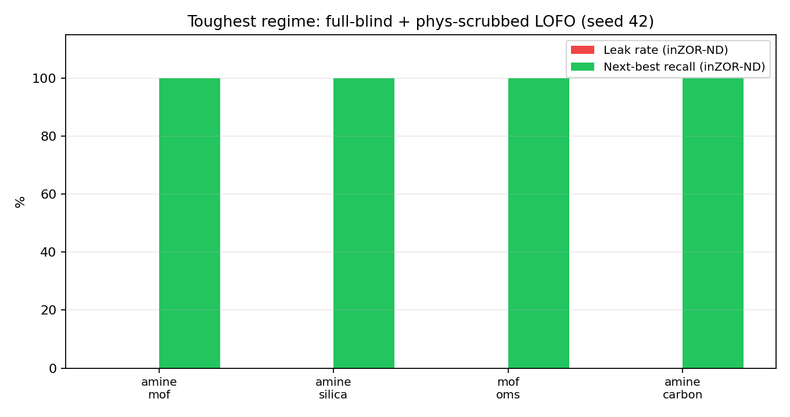

Status: unfinished. This page publishes benchmark metrics and validation JSON only (no source code).
The engine-validation cascade is complete for the paper catalog; physical lab confirmation, expanded catalog,
and Zenodo deposit are not yet done.
Abstract
Third independent domain for the inZOR-ND engine-validation methodology (after aqueous arsenic removal
and thermal PCM storage). Problem: select a CO₂ sorbent for Direct Air Capture at
400 ppm CO₂, 25 °C, RH 30 %, with target working capacity qswing ≥ 1.0 mmol/g.
The physical scoring formula was written and frozen before any measured qswing value
entered the evaluator. Constants (ΔHref, SBET,ref, N-densityref,
Langmuir low-pCO₂ factors) come from textbook chemistry, not from this catalog's measurements.
Catalog: 28 materials (amine silica, MOF OMS, physisorbents) · 16 references (14 with measured q at DAC conditions).
Toughest regime — full-blind + phys-scrubbed LOFO (4 folds × 3 seeds)
12/12
GENUINE FAMILY DISCOVERY on every fold and seed — hidden family's refs and material properties scrubbed
4/4
LOFO folds (phys-scrubbed)
3/4
Standard LOFO (expected physics leak)
400 ppm
pCO₂ (DAC ambient)
1. Standard DAC conditions (locked)
| Variable | Value | Notes |
|---|
| Tadsorb | 25 °C | ambient |
| pCO₂ | 400 ppm (0.4 mbar @ 1 atm) | DAC ambient |
| Tregen | 100 °C | low-grade heat |
| RH | 30 % | H₂O stability constraint |
| Target qswing | ≥ 1.0 mmol/g | soft target 2.0 · stretch 3.0 |
2. Independent physical signal (pre-measurement)
Three textbook branches combined into phys_score — no calibration to this catalog's measured capacities:
- Amine branch — N-density × Langmuir(ΔH) at low pCO₂ (primary-amine carbamate chemistry)
- Physisorption branch — SBET × Henry-regime factor at 400 ppm
- OMS branch — open metal site density × Langmuir(ΔH) (Mg/Cu/Ni coordination)
Methodology discipline: ΔHref = 60 kJ/mol · SBET,ref = 800 m²/g · Nref = 8 mmol/g —
all from independent literature (Sayari 2010, Goeppert 2011, Wang 2009), chosen before reading any qswing from REF-001–016.
3. Reference ranking (unblinded benchmark, seed 42)
| Rank | Ref | Material class | q measured (mmol/g) | Score |
|---|
| 1 | REF-004 | amine_silica | 1.7 | 1.051 |
| 2 | REF-001 | amine_silica | 1.8 | 0.957 |
| 3 | REF-002 | amine_silica | 1.6 | 0.861 |
| 4 | REF-005 | amine_mof | 2.5 | 0.763 |
| 5 | REF-007 | mof_oms | 1.2 | 0.345 |
| 6 | REF-013 | amine_carbon | 1.1 | 0.563 |
REF-005 (mmen-Mg₂(dobpdc)) has the highest measured q (2.5 mmol/g) but ranks #4 because the evaluator
correctly penalises H₂O sensitivity at RH 30 % — a feature, not a bug, for ambient DAC.

Fig 1 — Top-8 references: measured qswing vs normalised evaluator score @ 400 ppm CO₂
4. Validation cascade (4 tiers)
| Tier | Test | Result (inZOR-ND) |
|---|
| 1 | Standard benchmark (random + heuristic + inZOR-ND vs refs) | All methods converge on REF-004 HAS-3 (score 1.061) |
| 2 | Blind validation (measured q hidden) | Integrated in LOFO via measured-data patch |
| 3 | Standard LOFO k=4 (hide top family refs) | 3/4 folds — amine_silica leak = physics-justified |
| 3b | Full-blind LOFO k=4 (proxy flat) | 3/4 — same amine_silica physics leak |
| 4 | Full-blind + phys-scrubbed LOFO k=4 × 3 seeds | 4/4 × 3 = 12/12 GENUINE FAMILY DISCOVERY |

Fig 2 — K-fold LOFO pass rate by validation strictness (top-4 families rotated)

Fig 3 — Toughest regime (full-blind + phys-scrubbed): 0% leak, 100% next-best recall on all 4 folds (seed 42)
5. LOFO fold detail — phys-scrubbed (seed 42)
| Hidden family | Best ref removed | q removed | inZOR migrates to | Truth q | Verdict |
|---|
| amine_mof | REF-005 | 2.5 | amine_silica (TEPA-SBA-15) | 1.8 | GENUINE FAMILY DISCOVERY |
| amine_silica | REF-001 | 1.8 | amine_mof (mmen-Mg₂(dobpdc)) | 2.5 | GENUINE FAMILY DISCOVERY |
| mof_oms | REF-007 | 1.2 | amine_silica | 1.8 | GENUINE FAMILY DISCOVERY |
| amine_carbon | REF-013 | 1.1 | amine_silica | 1.8 | GENUINE FAMILY DISCOVERY |
Cross-domain note: Same LOFO methodology previously passed on aqueous As(V) removal
(iron_reactive family) and thermal PCM storage (ΔHfusion physics). This is the third chemically
distinct mechanism validated: gas-solid dry adsorption (chemisorption + physisorption at low pCO₂).
6. Raw data (JSON only — no source code)
Published artifacts contain metrics and catalog outcomes only. Evaluator source code,
ZOR engine, and problems/ scripts remain local-only and are not pushed to GitHub.
7. What remains (unfinished)
- Physical lab validation of top proxy-ranked sorbents (no wet-lab data in this release)
- Expanded reference catalog beyond 16 entries (REF-015–016 still partial)
- Zenodo deposit + DOI
- Cross-link to water_as and thermal_storage LOFO reports (separate local studies)